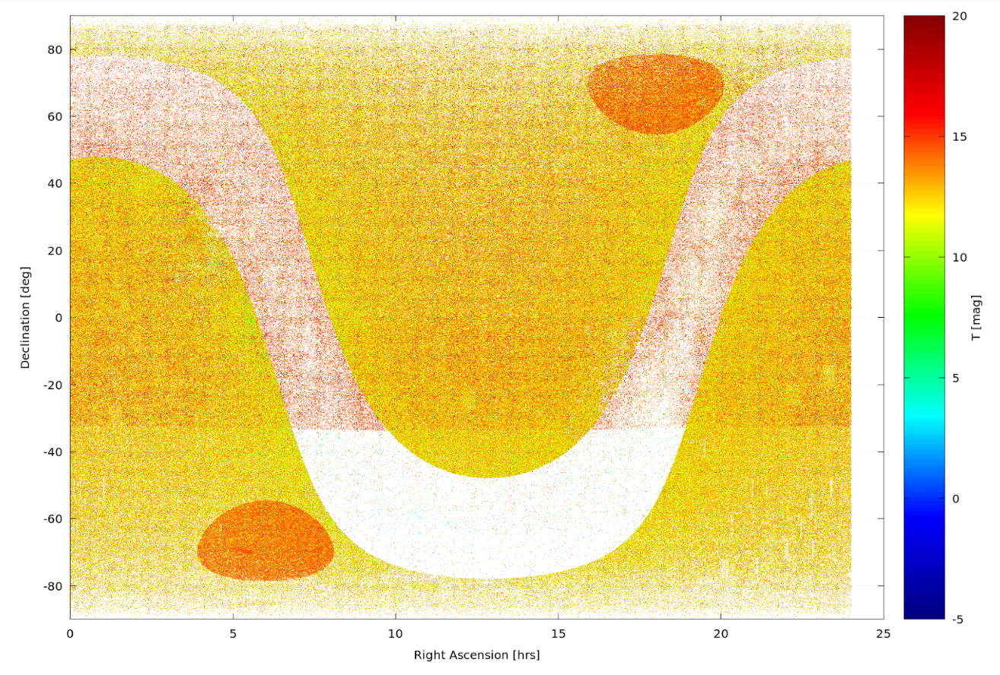

We have developed two pieces of softare to aid in the development of proposals. TVGuide helps with determining whether are target is observable in Cycle 1, and ticgen is used to calculate the brightness of a target in the TESS bandpass. In addition, resources have been created by various other team to aid in writing proposals.
Target list creation
The first stop for TESS GI proposers when preparing their proposals should be the STScI/MAST TESS pages. Here, proposers can follow tutorials to learn how to access the Target Input Catalog (TIC) and Candidate Target List (CTL), crossmatch their targets with these catalogs, and create output files with relevant target information required for the GI call. The TESS GI program office requires that if a target is in the TIC, GI proposers must provide only the following columns from the TIC in comma separated value (csv) format:
- TIC ID (if available)
- Right Ascension (decimal degrees)
- Declination (decimal degrees)
- Proper motion in Right Ascension (mas yr-1)
- Proper motion in Declination (mas yr-1)
- TESS mag
Since adherence to this format is critical for target list uploads to the Remote Proposal System (RPS) website, the MAST has provided a custom tutorial to show GI proposers how to select and output these columns for their target lists. Please follow this tutorial to provide a compliant target list.
Filtergraph
The Target Selection Working Group (TSWG) has also provided a tool for GI proposers to view and manipulate a high-priority subset of the current CTL in the Filtergraph data visualization system (Burger et al. 2013). Filtergraph is an online tool to upload data files, visualize the data in various formats (i.e. scatter plots, histograms, heat maps, etc.), manipulate these visualizations by filtering the data, and save figures in standard image output formats.
The following figure provides an example of a CTL visualization that can be made using Filtergraph. The figure displays all stars in CTL-5 in Dec vs. RA and color-coded by T mag. Features inherent to the CTL are immediately noticeable, such as the lower density of targets in the Galactic plane (due to high background contamination) and the higher density of targets in the ecliptic poles where TESS will have the longest continuous observation baseline and be more sensitive to transiting planets.

CTL-5 visualization generated using TIC/CTL Filtergraph portal. The figure shows the distribution of stars in the CTL-5 in equatorial coordinates. The color bar represents the targets' TESS magnitudes. There are fewer stars in the Galactic plane due to background contamination. The two elliptical regions of higher target density are the ecliptic poles, where TESS will observe continuously for nearly a year. Image Credit: Filtergraph
Additional premade figures are available on the CTL Filtergraph page, including CTL TESS mag and effective temperature histograms. Users may also create their own Filtergraph account and upload their own target lists for visualization following the instructions and tutorials on the main Filtergraph webpage.
TVGuide
TVGuide is a Python package that allows users to check whether a target potentially falls within the field of view of TESS.
In particular, the package adds the tvguide and tvguide-csv tools to the command line, which allow the visibility of targets to be checked during Cycle 1.
The code and documentation is hosted on Github and only briefly summarized here.
Installation
Users will need to have a working version of Python 2 or 3 installed. If this requirement is met, tvguide can be installed using pip:
pip install tvguide
If you have a previous version installed, please make sure you upgrade to the latest version using:
pip install tvguide --upgrade
It is important to upgrade frequently to ensure that you are using the most up to date TESS field parameters.
Usage
Installing tvguide will automatically add a command line tool to your path called tvguide, which takes a target as input and writes a new list that indicates the observability of the target, i.e. whether or not might fall on one of the detectors of the spacecraft's focal plane.
For example,
tvguide 219.9009 -60.8356
Success! The target may be observable by TESS during Cycle 1.
We can observe this source for:
maximum: 2 sectors
minimum: 0 sectors
median: 1 sectors
average: 1.16 sectors
You can also run on a file with targets currently implemented is using RA and Dec.
tvguide-csv inputfilename.csv
This will return a file with the two original columns plus two additional columns giving the minimum number and maximum of sectors that the target will be observed by with TESS.
ticgen
Will be added shortly.
Core science targets
This isn't software, but to aid in proposal preparation we have made a csv file available that contains the top 100,000 priority targets in the southern ecliptic hemisphere.